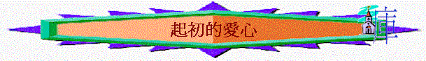

經文:啟2:1-7
一.地方的背景
~徒19:1,19:8-20怎樣描述以弗所教會建立的經過?
~弗1:1,15中,保羅如何稱讚以弗所?
二.耶穌的介紹
「你要寫信給以弗所教會的使者，說：『那右手拿著七星、在七個金燈臺中間行走的，說：』2:1
~耶穌怎樣介紹自己?
~七星代表什麼(1:20)?
主為何要強調祂右手拿著七星?
~七個金燈臺又是什麼意思(1:20)?
主又為何要強調祂在七個金燈臺中間行走?
~主的稱呼對我們今天教會有什麼提醒?
三.基督的提醒
「我知道你的行為、勞碌、忍耐，也知道你不能容忍惡人。你也曾試驗那自稱為使徒卻不是使徒的，看出他們是假的來。你也能忍耐，曾為我的名勞苦，並不乏倦。然而有一件事我要責備你，就是你把起初的愛心離棄了。」2:2-4
~主肯定他們什麼事?
你認為這間教會是否是熱心作工的教會? 有什麼難得的地方值我們欣賞?
~今天你欣賞教會什麼事?
~但他們出現什麼問題?
起初的愛心是什麼意思? 愛心可指對誰的愛心?
~若參考徒19:18-20,
弗1: 15,他們起初信主時,他們對神及對人有什麼愛心?
~離棄是什麼意思?
他們是否不愛人及愛神? 你猜想他們為什麼會離棄?
~我們最愛主及愛人的時候是在何時,那時怎樣愛主及愛人?
~離棄起初的愛心是否罪?
何而見得?(因要悔改,明顯是罪)
~主又教導他們現在應怎樣?
要回轉的方法是什麼?
~有人說我以前初信時可以何等愛主,現在失落了,現在已不能再有回起初的愛心,你同意以上看法嗎?
主是否斷定他們不可以重拾?
四.再來之意義
~另2:5提到主會回來，對以弗所教會又有甚麼意義呢？
~ 燈臺從原處挪去是什麼意思?
~得勝的教會,又會有什麼結果?
~[神樂園中生命樹的果子]:你想起那卷書出現過?
當初是誰可吃?
~起初的愛心與神樂園中生命樹的果子有什麼關係?
~我們在信仰生活中,易不易墜落起初的愛心?
為什麼? 我們又如何一同重拾呢?
參考資料
對以弗所教會的提醒----關乎初愛的重拾(2:1-7)
(1)地方的背景
以弗所是當時歐亞通道的主要中樞，是商業中心，著名大城，而在小亞細來說，是一間有相當影響力的教會，在起初時，曾十分愛主，將很多行邪術的香焚燒，另外保羅在以弗所書1章稱讚他們「信從主耶穌，親愛眾聖徒」「有忠心的人」也為他們不住的感謝神
(2)耶穌介紹
「你要寫信給以弗所教會的使者，說：『那右手拿著七星、在七個金燈臺中間行走的，說：』2:1
(A)在教會中行走
「在金燈臺中間行走的」表示祂在教會中間，知道教會真實的情況，也給以弗所教會認識主是瞭解他們，真知他們內�堻抳搨n有甚麼，欠缺甚麼，應怎追求的！
(B)在教會中掌權
祂是拿著「七星」(七星代表七個使者,應是人,是教會的代表),一間如何勞苦之教會也沒甚麼可誇，真正掌權是主，若教會有錯誤不悔改，祂有權將星從手中放下，有權挪移燈臺！
(3)基督的提醒
「我知道你的行為、勞碌、忍耐，也知道你不能容忍惡人。你也曾試驗那自稱為使徒卻不是使徒的，看出他們是假的來。你也能忍耐，曾為我的名勞苦，並不乏倦。然而有一件事我要責備你，就是你把起初的愛心離棄了。」2:2-4
(A)欣賞他們為主勞苦的擺上
人為主名勞苦，行忍耐，主是知道，主是欣賞，沒否定的！
(B)責備他們失落起初的愛心
(a)起初的愛心
原來主是知道，記得人起初的愛心，此愛心可能是對主或對人，以弗所教會當初對主的愛心，十分熱烈，為主放低一切，離棄邪術，偶像，主是記得的，另外，他們對眾人的愛心，保羅也欣賞，但時間久了，此熱烈、單純的初愛卻改變了！
(b)失落的可怕
〜即使有好生命、行為，仍會失落初愛！
〜失落了切愛，可以不知的！
*主要他們回想從那�媦Y落初愛，若不回想，可能真不記得，或不自覺何時或有失落過的！
〜失落初愛是罪
*主要他們悔改，只有犯罪先用悔改，所以失落初愛，也是罪的！
(C)回轉的方法
〜回想：從那�媦Y落，是甚麼原因呢？
〜悔改
〜行起初所行的
*原來仍可以像以往一般，重拾起初愛心的表現，昔日如何表現，就要行回起初所行的！
(4)再來之意義
主返來，對以弗所教會有甚麼意義呢？
(A)不悔者 -->挪去燈臺
「所以，應當回想你是從那裡墜落的，並要悔改，行起初所行的事。你若不悔改，我就臨到你那裡，把你的燈臺從原處挪去。」2:5
可能代表主不再用此教會，作世代的明燈，主不用信徒，是信徒其中最大的悲慘之事！
(B)得勝者 -->吃生命樹的果子
「聖靈向眾教會所說的話，凡有耳的，就應當聽！得勝的，我必將神樂園中生命樹的果子賜給他吃。」2:7
自從亞當夏娃犯罪後，神人關係破裂，人不能再返樂園�堙A也不能享用園中的果子，特別是生命樹的果子，但人重拾初愛，有了愛，有了主的十架，愛的關係重拾，人可返回樂園中，享受生命樹果子，享受因愛主而帶來的甜密，也能得著永遠生命的關係！